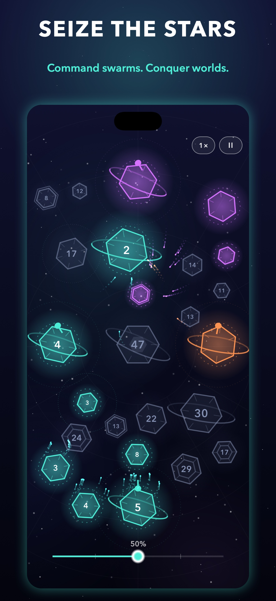
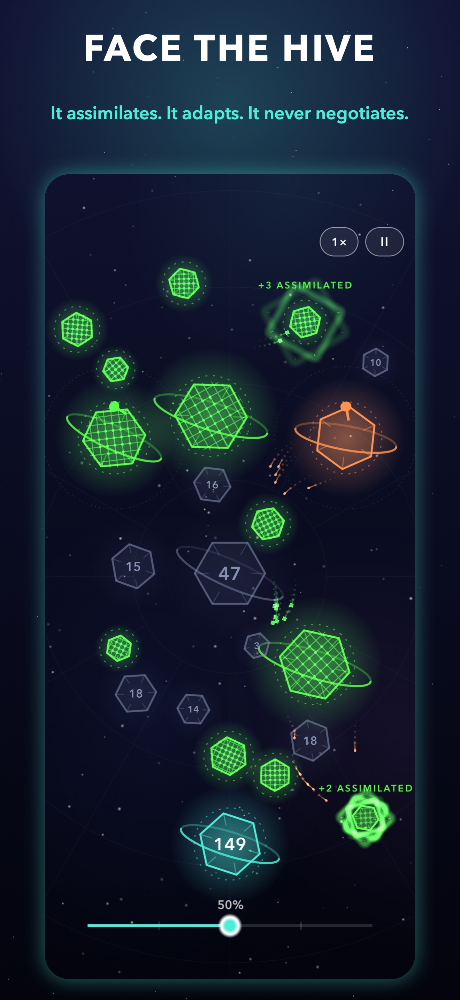
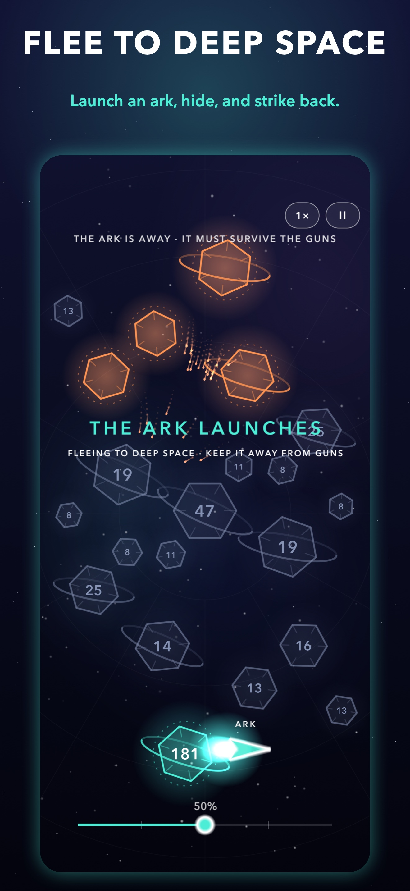

ORBITFALL
seize the stars, one swarm at a time



Orbitfall is fast, elegant real-time strategy for iPhone. Tap a world, tap a target, and send your swarm across the stars. Face clever AI rivals, play friends online with Game Center, and with the Commander's Pack take on the Hive, the Fog of War and the hidden regions of deep space.
Free to play. No ads, no timers.